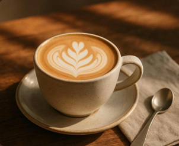

UN MOMENTO PARA DISFRUTAR
Un café especial
para cada momento.
Sabores que reconfortan, aromas que inspiran
y pequeños momentos que se vuelven especiales.

UN MOMENTO PARA DISFRUTAR
Sabores que reconfortan, aromas que inspiran
y pequeños momentos que se vuelven especiales.
